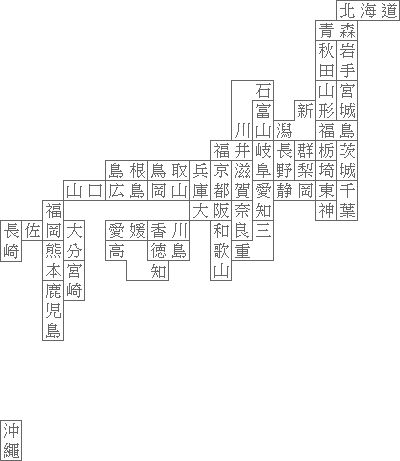

文字版日本國地圖 為了把日本地圖背下來，想到用文字堆出來記憶。經比對各縣市地理位置後，整理結果如下。 文字地圖 北海道 青森 秋岩 田手 石 山宮 富 新形城 川山潟／福島 福井岐長群栃茨 島根鳥取兵京滋阜野梨埼城 山口広島岡山庫都賀愛静岡東千 福 大阪奈知 神葉 長佐岡大 愛媛香川 和良三 崎 熊分 高 徳島 歌重 本宮 知 山 鹿崎 児 沖繩 島 以顏色標示各都道府県 北部地方：北海道青森県岩手県秋田県宮城県山形県福島県 東部地方：茨城県栃木県群馬県埼玉県千葉県東京都神奈川県山梨県長野県新潟県 中部地方：石川県富山県福井県岐阜県愛知県静岡県三重県 西部地方：滋賀県京都府大阪府兵庫県奈良県和歌山県鳥取県島根県岡山県広島県山口県 南部地方：徳島県香川県愛媛県高知県福岡県佐賀県長崎県熊本県大分県宮崎県鹿児島県沖縄県 因為我重點不是只想背地名而已，而是周遭縣市大概在哪個位置都想記住，所以有些地名是跳躍式的。你可以使用這些按鈕，以特殊顏色將縣市名稱標示起來。 以區塊劃分各都道府県 